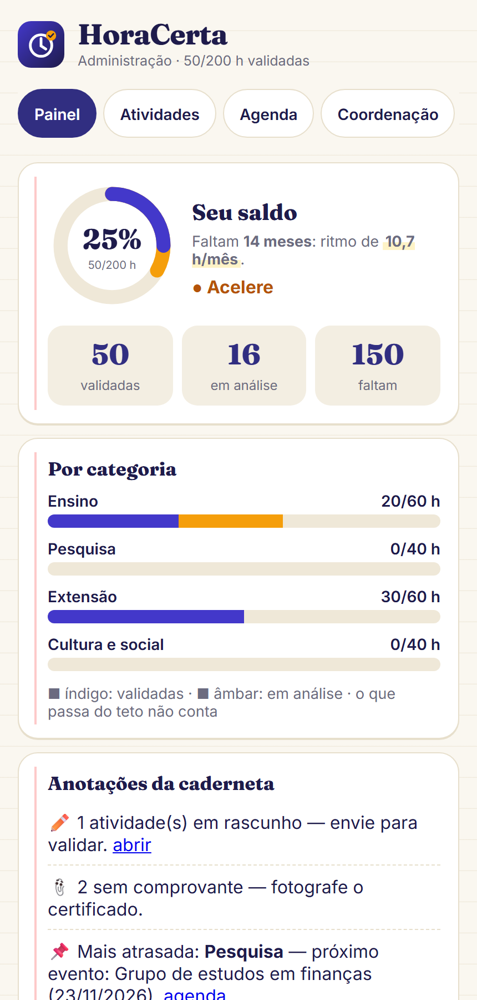
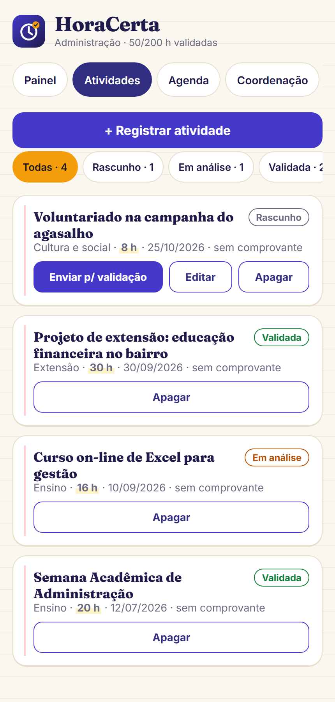
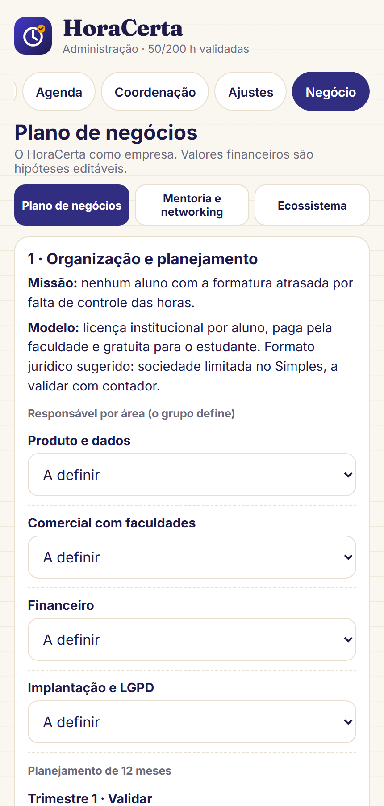

Saldo por categoria, comprovantes no celular e ritmo até a formatura — sem papel, sem planilha e sem susto no último semestre.
Grupo 1HoraCertaProf. Renato
José Arlindo da Cunha Filho · Taynara Luana de Oliveira · Luana da Silva Araújo · Leticia Leydiane de Oliveira · Samara de Campos Henrique
A pergunta que move o projeto
E se o aluno soubesse, hoje, quanto falta para colar grau?
A informação existe. Só está espalhada entre certificados de papel, e-mails e a conferência da secretaria.
O problema não é falta de atividade. É falta de controle.
O problema não é opinião
A regra é obrigatória. O controle ainda é artesanal.
9,9 mide matrículas na graduação; 79,3% em instituições privadasINEP, Censo 2023
10%da carga horária do curso em extensão, no mínimoResolução CNE/CES nº 7/2018
47%têm pouca ou nenhuma clareza do saldo validadoPesquisa do grupo · n = 32
59%dizem que a falta de tempo atrapalha cumprir as horasPesquisa do grupo · n = 32
O gargalo está na gestão: regras que variam por curso, saldo invisível e registro trabalhoso.
Quem sente primeiro
Três pessoas que convivem com a mesma planilha.
A
Aluna que trabalha
Estuda à noite e faz estágio
Tem pouco tempo para procurar atividade e não sabe quantas horas já foram validadas.
Dor: deixa tudo para o último ano.
C
Coordenação
Valida certificados por curso
Confere comprovante por comprovante, sem um padrão único entre os cursos.
Dor: retrabalho e prazo de resposta longo.
S
Secretaria
Registro acadêmico
Reabre processo porque o documento estava ilegível ou na categoria errada.
Dor: o erro só aparece no balcão.
A proposta em uma tela
De pasta e e-mail para saldo em tempo real.
Hoje
Certificado em papel ou foto perdida no celular
Saldo só aparece depois da conferência da secretaria
Dúvida sobre o que vale e em qual categoria
Descoberta do que falta no último semestre
→
Com o HoraCerta
Comprovante fotografado e guardado no aparelho
Saldo por categoria e projeção até a formatura
Envio para validação e motivo da recusa
Eventos que valem horas na agenda
Como funciona
Três passos no celular — e o comprovante sempre à mão.
1
Registre
Foto ou PDF do certificado, com categoria e carga horária.
2
Acompanhe
Saldo por categoria, ritmo mensal e situação até a formatura.
3
Valide
A coordenação aprova ou recusa com motivo, e o aluno reenvia.



O que a pesquisa de campo disse
O interesse existe. O que falta é clareza.
75%acham muito útil guardar comprovantes no celular (Q17)n = 32 · escala 1–5
69%têm interesse alto em um app único para as horas (Q20)n = 32 · escala 1–5
47%têm pouca ou nenhuma clareza do saldo validado (Q4)n = 32 · escala 1–5
59%dizem que a falta de tempo atrapalha muito (Q13)n = 32 · escala 1–5
Hipótese parcialmente sustentada. O interesse e a utilidade são altos, mas perder certificado e ter horas recusadas são raros. A dor que a pesquisa mediu é não saber o saldo, esperar pela validação e não ter tempo — por isso o foco do produto é clareza e rapidez.
Planejamento estratégico
Missão, visão e valores.
Missão
Nenhum aluno com a formatura atrasada por falta de controle das horas complementares.
Visão
Ser o painel de horas de referência nas faculdades privadas de Mato Grosso até 2028.
Valores
ClarezaAutonomiaSimplicidadePrivacidadeParceria com a coordenação
O aluno é dono dos próprios dados: comprovantes e saldo ficam no aparelho, e o regulamento de cada curso é respeitado.
Análise SWOT
O que está sob nosso controle e o que vem do ambiente.
Forças
Saldo por categoria em tempo real
Comprovante no celular, sem papel
Regulamento configurável por curso
Fluxo de validação com motivo da recusa
Funciona offline (PWA)
Fraquezas
Protótipo, sem integração com o sistema acadêmico
Validação simulada no MVP
Amostra de conveniência (n = 32)
Depende da adesão da coordenação
Oportunidades
9,9 milhões de matrículas na graduação
79,3% em instituições privadas
2.580 instituições de ensino superior
Extensão obrigatória em todos os cursos
Interesse alto medido no campo
Ameaças
Regras diferentes por curso e por instituição
Mudança de coordenação e descontinuidade
Sistemas acadêmicos já contratados
Privacidade e LGPD no tratamento de documentos
Gestão da inovação e tecnologia
Inovar é criar o novo e melhorar o que já existe.
Inovação é criar algo novo ou melhorar o que já existe — e só vira inovação quando chega a alguém e resolve um problema.
O que criamos
O saldo por categoria visível a qualquer momento
O certificado que vira registro com comprovante
A projeção do ritmo mensal até a formatura
O que melhoramos
A pasta de certificados vira painel no celular
A espera pela secretaria vira fila de validação
A dúvida no grupo vira regra configurada no app
Incrementalformulário e linguagem
Adjacenteintegração com o sistema acadêmico
Radicalhoras acompanhadas em tempo real
Roadmap
Do protótipo ao piloto em um curso.
Hoje · MVP
Provar o fluxo
Saldo, comprovante e fila de validação
Regulamento configurável e offline
Exportação dos dados em JSON e CSV
v1 · 6 meses
Piloto na Unifacc
Um curso com painel real da coordenação
Medir tempo de validação e alunos com saldo
Ajustar o regulamento com a secretaria
v2 · 12–18 meses
Integrar e escalar
Integração com o sistema acadêmico
Leitura automática de certificados
Outras faculdades privadas de Mato Grosso
Impacto e métricas
Nenhum aluno deve descobrir no último semestre que faltam horas.
%de alunos com saldo configurado no app
diasde redução no tempo de validação
%de atividades enviadas com comprovante
100%dos alunos do último ano com as horas completas
Indicador central: o aluno sabe, em qualquer mês do curso, quanto falta e qual é o ritmo para fechar as horas.
Riscos e mitigação
O que pode dar errado — e o que fazemos com isso.
Regras diferentes por cursoregulamento configurável por categoria, teto e prazo; o piloto começa em um curso e replica o modelo.
Comprovante perdido ou ilegívelfoto no celular, validação com motivo da recusa e reenvio pelo próprio app.
Baixa adesão da coordenaçãopiloto com uma coordenação parceira e relatório de tempo poupado.
Privacidade dos documentosdados e comprovantes no aparelho; LGPD desde o desenho; envio só com consentimento.
Para levar
O aluno não precisa descobrir no último semestre que faltam horas. Precisa saber hoje.
Abra o app e veja o saldo de exemplo.
Grupo 1José ArlindoTaynaraLuanaLeticiaSamaraProf. Renato